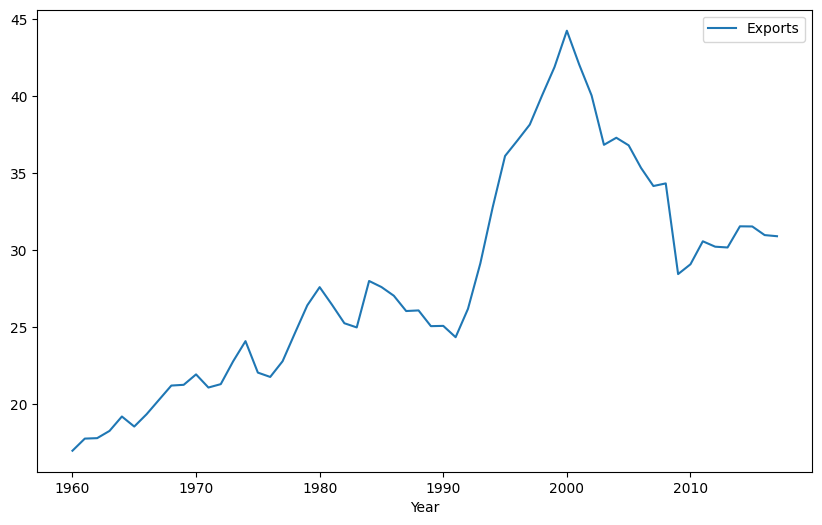
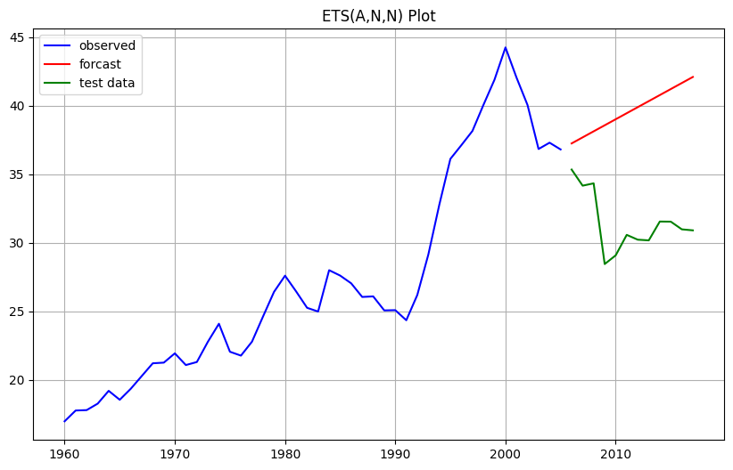
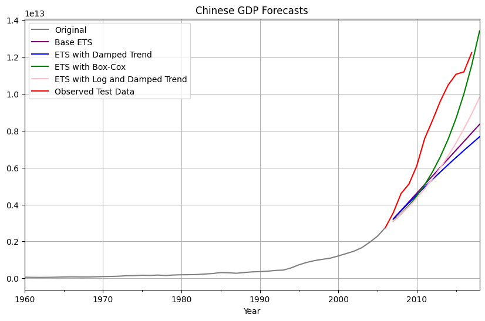
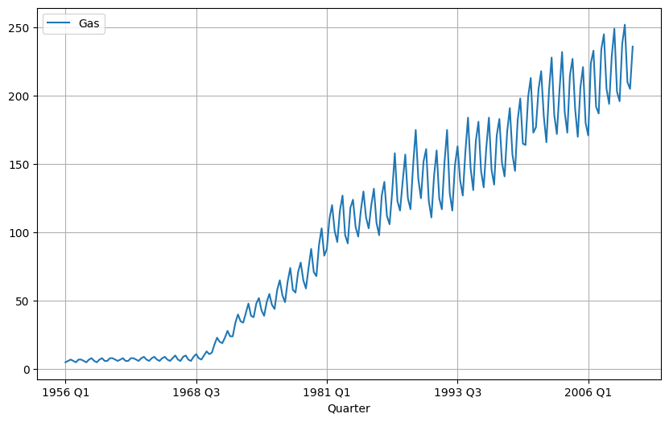
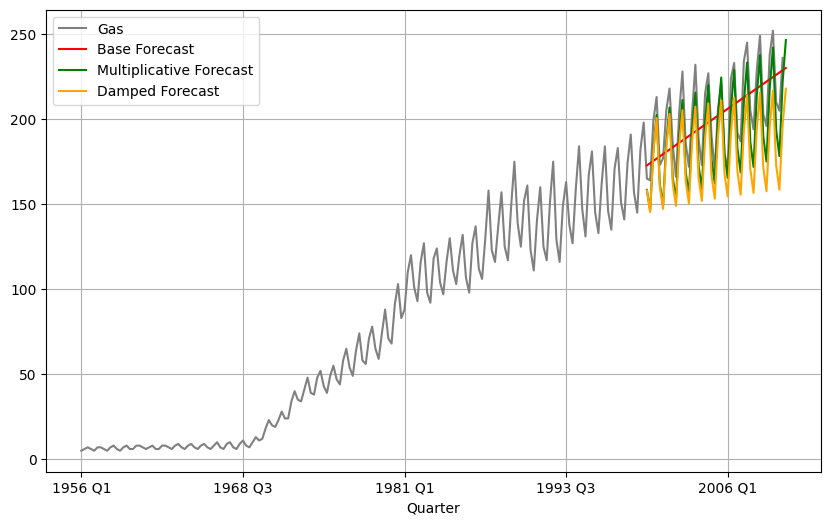
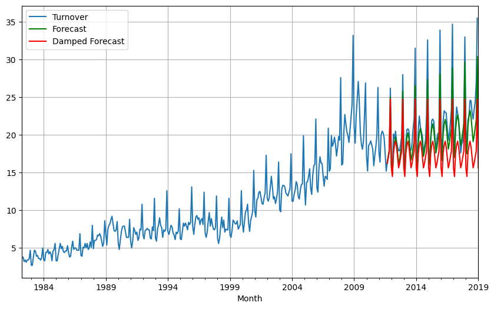

Consider the the number of pigs slaughtered in Victoria, available in the aus_livestock dataset.
Unnamed: 0
Animal
State
Count
Month
1976-07-01
1
Bulls, bullocks and steers
Australian Capital Territory
2300.0
1976-08-01
2
Bulls, bullocks and steers
Australian Capital Territory
2100.0
1976-09-01
3
Bulls, bullocks and steers
Australian Capital Territory
2100.0
1976-10-01
4
Bulls, bullocks and steers
Australian Capital Territory
1900.0
1976-11-01
5
Bulls, bullocks and steers
Australian Capital Territory
2100.0
...
...
...
...
...
2018-08-01
29360
Sheep
Western Australia
160600.0
2018-09-01
29361
Sheep
Western Australia
121900.0
2018-10-01
29362
Sheep
Western Australia
134000.0
2018-11-01
29363
Sheep
Western Australia
153700.0
2018-12-01
29364
Sheep
Western Australia
127300.0
29364 rows × 4 columns
Part A
Use the ETS() function to estimate the equivalent model for simple exponential smoothing. Find the optimal values of α and ℓ_0, and generate forecasts for the next four months.
from statsmodels.tsa.holtwinters import ExponentialSmoothingmodel = ExponentialSmoothing(victorian_pigs, trend ='additive', seasonal =None).fit()predictions = model.forecast(steps=4) # predict the next 4 time steps
Compute a 95% prediction interval for the first forecast using \hat{y}±1.96s where s is the standard deviation of the residuals. Compare your interval with the interval produced by R
# we need to calc only the first forecast residuals_std = model.resid.std()first_forecast = predictions.iloc[0]margin_of_error =1.96* residuals_stdlower_limit = first_forecast - margin_of_errorupper_limit = first_forecast + margin_of_errorprint(f'95% Prediction Interval: ({lower_limit:.2f}, {upper_limit:.2f})')
95% Prediction Interval: (77022.62, 114041.83)
Rcode :
```{r}
fc |>
autoplot(tail(vic_pigs, 5)) +
geom_line(aes(y = .fitted), col="#D55E00",
data = augment(fit)) +
labs(y="% of GDP", title="Victorian Pigs") +
guides(colour = "none")
` ` `
image.png
My 95% confidence intervals is narrower compared to the confidence interval produced from the Rcode. We suspect that this may due to different smoothing and leveling estimates.
Exercise 8.5
Data set global_economy contains the annual Exports from many countries. Select one country to analyse.
Part A
Plot the Exports series and discuss the main features of the data
from statsmodels.tsa.seasonal import seasonal_decomposeresult = seasonal_decompose(canada_exports, model='additive')result.plot()plt.show()

Canada’s exports exhibits a overall upward trend from 1960 to 2017, with a notable growth during the 1990s. This trend peaked around the year 2000, followed by a decline until 2010 where it started to stabilize. The time series decomposition confirms the absence of seasonality, demosntrating a straight line seasonal component.
Part B
Use an ETS(A,N,N) model to forecast the series, and plot the forecasts.
# train test split train_data, test_data = canada_exports[0:int(len(canada_exports)*0.8)], canada_exports[int(len(canada_exports)*0.8):]
# ETS(A,N,N) would be trend = 'add' and damped_trend = Falsefrom statsmodels.tsa.exponential_smoothing.ets import ETSModelets_model = ETSModel(train_data['Exports'], trend ='add', damped_trend =False, seasonal =None).fit()forecast = ets_model.forecast(steps=len(test_data))
c:\Users\nickc\DataScience\ds_env\Lib\site-packages\statsmodels\tsa\base\tsa_model.py:473: ValueWarning: No frequency information was provided, so inferred frequency AS-JAN will be used.
self._init_dates(dates, freq)
plt.plot(train_data.index, train_data, color ='blue', label='observed')plt.plot(forecast.index, forecast, color ='red', label='forcast')plt.plot(test_data.index, test_data, color ='green', label='test data')plt.legend()plt.title('ETS(A,N,N) Plot')plt.grid(True)plt.show()

Part C
Compute the RMSE values for the training data.
fitted_values = ets_model.fittedvalues
from sklearn.metrics import mean_squared_errorann_rmse = mean_squared_error(train_data, fitted_values)print(f'RMSE: {mean_squared_error(train_data, fitted_values)}')
RMSE: 2.1710919202650967
Part D
Compare the results to those from an ETS(A,A,N) model. (Remember that the trended model is using one more parameter than the simpler model.) Discuss the merits of the two forecasting methods for this data set.
# for this it is trend ='add' and damped_trend = Truemodel = ETSModel(train_data['Exports'], trend ='add', damped_trend=True, seasonal=None).fit()aan_forecast = model.forecast(steps =len(test_data))
c:\Users\nickc\DataScience\ds_env\Lib\site-packages\statsmodels\tsa\base\tsa_model.py:473: ValueWarning: No frequency information was provided, so inferred frequency AS-JAN will be used.
self._init_dates(dates, freq)
plt.plot(train_data.index, train_data, color ='blue', label='observed')plt.plot(aan_forecast.index, aan_forecast, color ='red', label='forcast')plt.plot(test_data.index, test_data, color ='green', label='test data')plt.legend(loc ='upper left')plt.title('ETS(A,A,N) Plot')plt.grid(True)plt.show()
Compare the forecasts from both methods. Which do you think is best?
Based on the forecasts, we conclude that ETS(A,A,N) provides a better fit for out timeseries. Not only does its capture the observed downward trend of the test set, but this is also supported by its lower RMSE compared to the ETS(A,N,N) model’s RMSE. The ETS(A,N,N) model’s assumption of the constant trend leads to an incorrent forecast trajectory following the training set. highlinhting the importance of choosing a the correct model.
Part F
Calculate a 95% prediction interval for the first forecast for each model, using the RMSE values and assuming normal errors. Compare your intervals with those produced using R.
print('Confidence Interval of the first forecast of the ETS(A,N,N) model: ')print(prediction_interval)
Confidence Interval of the first forecast of the ETS(A,N,N) model:
(32.980483846327374, 41.49116417376655)
print('Confidence Interval of the first forecast of the ETS(A,N,N) model: ')print(prediction_interval_2)
Confidence Interval of the first forecast of the ETS(A,N,N) model:
(32.61034478739475, 40.25308538697453)
Exercise 8.6
Forecast the Chinese GDP from the global_economy data set using an ETS model. Experiment with the various options in the ETS() function to see how much the forecasts change with damped trend, or with a Box-Cox transformation. Try to develop an intuition of what each is doing to the forecasts.
[Hint: use a relatively large value of h when forecasting, so you can clearly see the differences between the various options when plotting the forecasts.]
# base modelmodel_1 = ETSModel(train_data['GDP'], trend='add', seasonal=None).fit()forecast_1 = model_1.forecast(steps=len(test_data))
c:\Users\nickc\DataScience\ds_env\Lib\site-packages\statsmodels\tsa\base\tsa_model.py:473: ValueWarning: No frequency information was provided, so inferred frequency AS-JAN will be used.
self._init_dates(dates, freq)
# with the damped trend model_2 = ETSModel(train_data['GDP'], trend ='add', damped_trend=True, seasonal=None).fit()forecast_2 = model_2.forecast(steps =len(test_data))
c:\Users\nickc\DataScience\ds_env\Lib\site-packages\statsmodels\tsa\base\tsa_model.py:473: ValueWarning: No frequency information was provided, so inferred frequency AS-JAN will be used.
self._init_dates(dates, freq)
C:\Users\nickc\AppData\Local\Temp\ipykernel_28708\3408299051.py:7: SettingWithCopyWarning:
A value is trying to be set on a copy of a slice from a DataFrame.
Try using .loc[row_indexer,col_indexer] = value instead
See the caveats in the documentation: https://pandas.pydata.org/pandas-docs/stable/user_guide/indexing.html#returning-a-view-versus-a-copy
train_data['gdp_boxcox'] = gdp_transformed
c:\Users\nickc\DataScience\ds_env\Lib\site-packages\statsmodels\tsa\base\tsa_model.py:473: ValueWarning: No frequency information was provided, so inferred frequency AS-JAN will be used.
self._init_dates(dates, freq)
C:\Users\nickc\AppData\Local\Temp\ipykernel_28708\3159823729.py:3: SettingWithCopyWarning:
A value is trying to be set on a copy of a slice from a DataFrame.
Try using .loc[row_indexer,col_indexer] = value instead
See the caveats in the documentation: https://pandas.pydata.org/pandas-docs/stable/user_guide/indexing.html#returning-a-view-versus-a-copy
train_data.loc[:, 'log_gdp'] = np.log(train_data['GDP']).copy()
c:\Users\nickc\DataScience\ds_env\Lib\site-packages\statsmodels\tsa\base\tsa_model.py:473: ValueWarning: No frequency information was provided, so inferred frequency AS-JAN will be used.
self._init_dates(dates, freq)
train_data['GDP'].plot(label='Original', color ='grey')forecast_1.plot(label='Base ETS', color ='purple')forecast_2.plot(label='ETS with Damped Trend', color ='blue')forecast_3.plot(label='ETS with Box-Cox', color ='green')forecast_4.plot(label='ETS with Log and Damped Trend', color ='pink')test_data['GDP'].plot(label ='Observed Test Data', color ='red')plt.legend()plt.title('Chinese GDP Forecasts')plt.grid(True)plt.show()

The base model with simple exponential smoothing captures the general upward trend of China’s GDP. However, as the base model it might not capture the growth rate of the data since the appears to be linear. The dampening factor smooths out the trend. This introduces the intuition that the explosive growth rate observed in the past might slow down in the future. The forecast reflects a less steep trajectory. The Box-Cox transformation often helps when the pattern of increase in a time series changes over time. In this case, since it fits the test data closely, the intuition is that Chinese GDP might have a pattern of increasingly rapid growth that the standard ETS model wasn’t fully capturing. The log transformation tends to scale down large values. In combination with dampening, this model intuitively suggests a very conservative forecast but knows that growth exists, but will progress much slower than any of the other models project.
Exercise 8.7
Find an ETS model for the Gas data from aus_production and forecast the next few years. Why is multiplicative seasonality necessary here? Experiment with making the trend damped. Does it improve the forecasts?
aus_gas = aus_production[['Gas']]
aus_gas.plot()plt.grid(True)plt.show()

The Gas production data displays an increasing variance pattern over time. This means that the magnitude of the fluctuations and the impact of the trend component likely scale with the underlying production level. Therefore, a multiplicative ETS model is expected to better capture this behavior and generate more reliable forecasts.
# base modelmodel = ETSModel(train_data['Gas'], trend ='add').fit()forecast_base = model.forecast(steps =len(test_data))
c:\Users\nickc\DataScience\ds_env\Lib\site-packages\statsmodels\tsa\base\tsa_model.py:559: UserWarning: Could not infer format, so each element will be parsed individually, falling back to `dateutil`. To ensure parsing is consistent and as-expected, please specify a format.
_index = to_datetime(index)
c:\Users\nickc\DataScience\ds_env\Lib\site-packages\statsmodels\tsa\base\tsa_model.py:473: ValueWarning: An unsupported index was provided and will be ignored when e.g. forecasting.
self._init_dates(dates, freq)
c:\Users\nickc\DataScience\ds_env\Lib\site-packages\statsmodels\tsa\base\tsa_model.py:836: ValueWarning: No supported index is available. Prediction results will be given with an integer index beginning at `start`.
return get_prediction_index(
c:\Users\nickc\DataScience\ds_env\Lib\site-packages\statsmodels\tsa\base\tsa_model.py:836: FutureWarning: No supported index is available. In the next version, calling this method in a model without a supported index will result in an exception.
return get_prediction_index(
c:\Users\nickc\DataScience\ds_env\Lib\site-packages\statsmodels\tsa\base\tsa_model.py:559: UserWarning: Could not infer format, so each element will be parsed individually, falling back to `dateutil`. To ensure parsing is consistent and as-expected, please specify a format.
_index = to_datetime(index)
c:\Users\nickc\DataScience\ds_env\Lib\site-packages\statsmodels\tsa\base\tsa_model.py:473: ValueWarning: An unsupported index was provided and will be ignored when e.g. forecasting.
self._init_dates(dates, freq)
c:\Users\nickc\DataScience\ds_env\Lib\site-packages\statsmodels\tsa\base\tsa_model.py:836: ValueWarning: No supported index is available. Prediction results will be given with an integer index beginning at `start`.
return get_prediction_index(
c:\Users\nickc\DataScience\ds_env\Lib\site-packages\statsmodels\tsa\base\tsa_model.py:836: FutureWarning: No supported index is available. In the next version, calling this method in a model without a supported index will result in an exception.
return get_prediction_index(
c:\Users\nickc\DataScience\ds_env\Lib\site-packages\statsmodels\tsa\base\tsa_model.py:559: UserWarning: Could not infer format, so each element will be parsed individually, falling back to `dateutil`. To ensure parsing is consistent and as-expected, please specify a format.
_index = to_datetime(index)
c:\Users\nickc\DataScience\ds_env\Lib\site-packages\statsmodels\tsa\base\tsa_model.py:473: ValueWarning: An unsupported index was provided and will be ignored when e.g. forecasting.
self._init_dates(dates, freq)
c:\Users\nickc\DataScience\ds_env\Lib\site-packages\statsmodels\tsa\base\tsa_model.py:836: ValueWarning: No supported index is available. Prediction results will be given with an integer index beginning at `start`.
return get_prediction_index(
c:\Users\nickc\DataScience\ds_env\Lib\site-packages\statsmodels\tsa\base\tsa_model.py:836: FutureWarning: No supported index is available. In the next version, calling this method in a model without a supported index will result in an exception.
return get_prediction_index(
aus_gas.plot(label='Observed Data', color ='grey')forecast_base.plot(label ='Base Forecast', color ='red')forecast_mul.plot(label ='Multiplicative Forecast', color ='green')forecast_damped.plot(label ='Damped Forecast', color ='orange')plt.legend()plt.grid(True)plt.show()

The damped trend into the ETS model results in a more conservative trend forecast, suggesting a potential slowdown in the growth rate compared to the basic ETS model. While the multiplicative seasonal ETS model appears to align more closely with the observed data patterns than the damped forecast.Thus, indicates that the variance in the time series might increase along with the overall level, making the multiplicative seasonality model a better fit.
Exercise 8.8
Recall your retail time series data (from Exercise 7 in Section 2.10).
C:\Users\nickc\AppData\Local\Temp\ipykernel_28708\3632377730.py:2: UserWarning: Could not infer format, so each element will be parsed individually, falling back to `dateutil`. To ensure parsing is consistent and as-expected, please specify a format.
aus_retail = pd.read_csv('c:/Users/nickc/DataScience/NickAMC.github.io/DATA_624_S24/rdata/aus_retail.csv', parse_dates=['Month'], index_col='Month')
aus_retail.State.unique()
array(['Australian Capital Territory', 'New South Wales',
'Northern Territory', 'Queensland', 'South Australia', 'Tasmania',
'Victoria', 'Western Australia'], dtype=object)
clothing_retail = aus_retail.query('Industry == "Clothing retailing" & State == "Australian Capital Territory"')[['Turnover']]
Part A
Why is multiplicative seasonality necessary for this series?
c:\Users\nickc\DataScience\ds_env\Lib\site-packages\statsmodels\tsa\base\tsa_model.py:473: ValueWarning: No frequency information was provided, so inferred frequency MS will be used.
self._init_dates(dates, freq)
c:\Users\nickc\DataScience\ds_env\Lib\site-packages\statsmodels\tsa\base\tsa_model.py:473: ValueWarning: No frequency information was provided, so inferred frequency MS will be used.
self._init_dates(dates, freq)
clothing_retail.plot(label ='Observed')forecast.plot(label ='Forecast', color ='green')forecast_damp.plot(label ='Damped Forecast', color ='red')plt.legend()plt.grid(True)plt.show()

Part C
Compare the RMSE of the one-step forecasts from the two methods. Which do you prefer?
c:\Users\nickc\DataScience\ds_env\Lib\site-packages\statsmodels\tsa\base\tsa_model.py:473: ValueWarning: No frequency information was provided, so inferred frequency MS will be used.
self._init_dates(dates, freq)
test_rmse = np.sqrt(mean_squared_error(test['Turnover'], forecast_2010))print("Test Set RMSE (ETS Model):", test_rmse)
Test Set RMSE (ETS Model): 5.003789852798558
Exercise 8.9
For the same retail data, try an STL decomposition applied to the Box-Cox transformed series, followed by ETS on the seasonally adjusted data. How does that compare with your best previous forecasts on the test set?
C:\Users\nickc\AppData\Local\Temp\ipykernel_28708\381446324.py:3: SettingWithCopyWarning:
A value is trying to be set on a copy of a slice from a DataFrame.
Try using .loc[row_indexer,col_indexer] = value instead
See the caveats in the documentation: https://pandas.pydata.org/pandas-docs/stable/user_guide/indexing.html#returning-a-view-versus-a-copy
train['Turnover_boxcox'] = turnover_boxcox
c:\Users\nickc\DataScience\ds_env\Lib\site-packages\statsmodels\tsa\base\tsa_model.py:473: ValueWarning: No frequency information was provided, so inferred frequency MS will be used.
self._init_dates(dates, freq)
test_rmse = np.sqrt(mean_squared_error(test_resid, forecast))print("Test Set RMSE (ETS Model):", test_rmse)